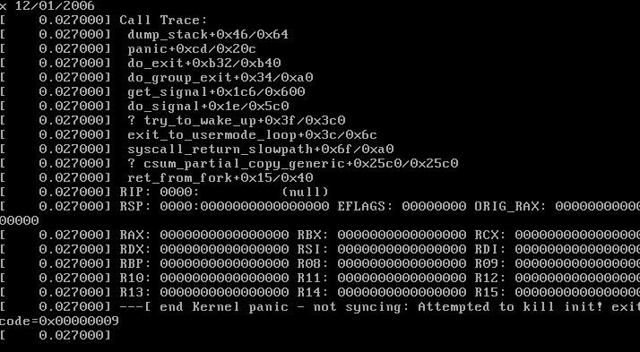
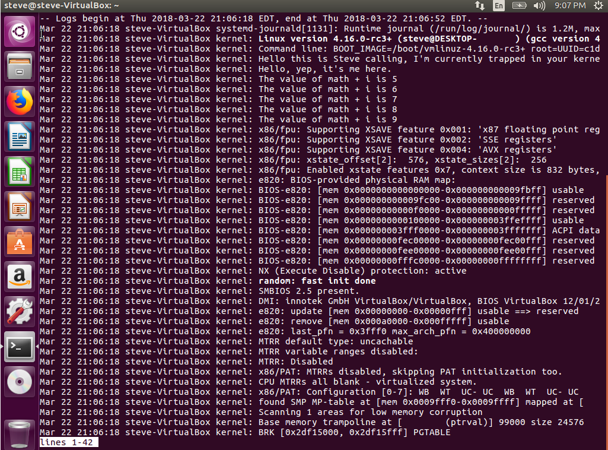

Making Simple Modifications to the Linux Source
The Linux kernel is one of the most complex open-source projects available to the public, and the source code that comprises it is highly intricate, to say the least. Knowing this, I wondered what it would take to pick apart such a technological beast and actually begin to understand it. The key to understanding, like anything else, is to learn by doing. The entire source repository is available to view in a browser, and more than 95% of it is written in C. How hard could it be to write a little C code?
As it turns out, it's harder than expected. Keep reading to get the full rundown on how I edited the kernel source, built it, broke it (several times), and finally made a simple change that produced an output in the system logs.
This post is Part 2 of a series on the Linux kernel.
Prerequisite
Before we start, you may want to check out how to build the kernel. This will allow you to make the same modifications that I do as the article progresses and to eventually make your own changes.
Modifications
Let's get our hands dirty. Today, our goal will be to add a snippet of code that does some math for us and prints several lines to the system log using printk. The snippet we will be using is as follows:
printk(KERN_DEBUG "Hello this is Steve calling, I'm currently trapped in your kernel.");
printk(KERN_DEBUG "Hello, yep, it's me here.");
int math = 5;
int i;
int ans;
for (i = 0; i < 5; i++) {
ans = math + i;
printk(KERN_DEBUG "The value of math + i is %i", ans);
}
Kernel printing
Note that the above code makes use of the printkern function. This is the function that prints to the system log, which can be viewed using the dmesg command. On some Linux distributions, these messages can also be found in the /var/log/messages file; for some others, the command journalctl does the trick. When in doubt, though, just opt for dmesg.
Entry Point
A quick Google search told me that the kernel entry point is located in init/main.c. This fascinated me - I hoped that at least knowing where execution began would allow me to slowly unravel the kernel source code. I also (perhaps naively) thought it would be easy to make changes here, in one of the most important parts of the kernel.
Reading through the source led me to believe that the true start of execution was in the static int kernel_init(void) function.
First Attempt - Panic!
I want to include an analogy before we begin. Modifying a project of this magnitude without knowing anything about it is something like doing heart surgery with a shovel. With that said, let's continue.
My first thought for how to go about this was to find the kernel entry point, insert my code at the beginning of the function, and return. The code looked something like this:
static int __ref kernel_init(void *unused)
{
printk(KERN_DEBUG "Hello this is Steve calling, I'm currently trapped in your kernel.");
// The rest of our snippet ...
...
return 0;
int ret;
// The rest of the function, never to be executed
...
}
My expectation was that when the machine booted, it would display my messages and stop all execution, leaving my text up for the world to see. The result was a little bit different... It caused a kernel panic!

At this point, I realized that the kernel_init function may do something important, and that cutting it off and returning before the first line may not have been the best strategy. Go figure!
Trying Again
My next attempt involved moving the print statement to the end of the function, where (hopefully) all of the important setup tasks would have already been completed.
static int __ref kernel_init(void *unused)
{
// Important code...
...
if (ramdisk_execute_command) {
ret = run_init_process(ramdisk_execute_command);
if (!ret)
return 0;
pr_err("Failed to execute %s (error %d)\n",
ramdisk_execute_command, ret);
}
printk(KERN_DEBUG "Hello this is Steve calling, I'm currently trapped in your kernel.");
// The rest of our snippet
...
}
This time, building the kernel succeeded (albeit with a warning due to my sloppy coding skills) and the system booted without crashing. Even so, I couldn't help but be disappointed when I checked the logs.
While there was no crash, our message still didn't show up in the logs. Something was still wrong. My only guess was that our snippet started trying to print things before anything was ready to record them. So, I started to follow the spaghetti...
Digging In
I needed to find a place where printk would work.
I started by following the method called in kernel_init in hopes of understanding the line of execution. This was made easier with a handy tool I stumbled across for browsing the kernel source. I started by looking up run_init_process (init/main.c), then do_execve (fs/exec.c), then do_execveat_common (fs/exec.c)...
It didn't take long for me to realize I was in over my head. I needed a different strategy than trying to read the source like a book.
The Fix We Need
I decided to check where some of the other messages in dmesg were being outputted. In the system log screenshot shown above, the second message is Command line: BOOT_IMAGE=.... So, I searched the source for that line:
This almost immediately yielded some files in the arch directory. At first, I just edited the first file that came up (arch/alpha/kernel/setup.c), but this didn't work. arch is short for architecture, meaning that I would have to edit the source for the architecture of my target system. In my case, this was arch/x86/kernel/setup.c.
I found the relevant line in this file, and inserted our code snippet below it:
#else
printk(KERN_INFO "Command line: %s\n", boot_command_line);
// Here goes nothing!!
printk(KERN_DEBUG "Hello this is Steve calling, I'm currently trapped in your kernel.");
printk(KERN_DEBUG "Hello, yep, it's me here.");
int math = 5;
int i;
int ans;
for (i = 0; i < 5; i++) {
ans = math + i;
printk(KERN_DEBUG "The value of math + i is %i", ans);
}
#endif
After inserting the code, I performed another quick kernel build, and...

Success! The kernel logs finally showed our beloved homemade debug messages. With this, we successfully added our own code to the kernel and verified that it executed.
Wrapping Up
Though it took a few botched attempts and shots in the dark, I was finally able to inject custom code into the kernel and verify that it executed. While it's a colossal monster of a project, you can scratch the surface of the Linux kernel source if you know where to look! There were a few blunders along the way, but by correcting these mistakes, I learned a lot and accomplished my original goal. I would encourage you to do the same. Continue to tinker where we left off, and see what you can learn!
This post is Part 2 of a series on the Linux kernel.